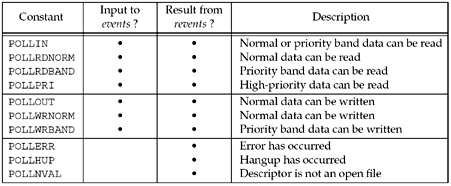
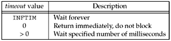

| [ Team LiB ] |
|
6.10 poll FunctionThe poll function originated with SVR3 and was originally limited to STREAMS devices (Chapter 31). SVR4 removed this limitation, allowing poll to work with any descriptor. poll provides functionality that is similar to select, but poll provides additional information when dealing with STREAMS devices.
The first argument is a pointer to the first element of an array of structures. Each element of the array is a pollfd structure that specifies the conditions to be tested for a given descriptor, fd.
struct pollfd {
int fd; /* descriptor to check */
short events; /* events of interest on fd */
short revents; /* events that occurred on fd */
};
The conditions to be tested are specified by the events member, and the function returns the status for that descriptor in the corresponding revents member. (Having two variables per descriptor, one a value and one a result, avoids value-result arguments. Recall that the middle three arguments for select are value-result.) Each of these two members is composed of one or more bits that specify a certain condition. Figure 6.23 shows the constants used to specify the events flag and to test the revents flag against. Figure 6.23. Input events and returned revents for poll. We have divided this figure into three sections: The first four constants deal with input, the next three deal with output, and the final three deal with errors. Notice that the final three cannot be set in events, but are always returned in revents when the corresponding condition exists. There are three classes of data identified by poll: normal, priority band, and high-priority. These terms come from the STREAMS-based implementations (Figure 31.5).
With regard to TCP and UDP sockets, the following conditions cause poll to return the specified revent. Unfortunately, POSIX leaves many holes (i.e., optional ways to return the same condition) in its definition of poll.
The number of elements in the array of structures is specified by the nfds argument.
The timeout argument specifies how long the function is to wait before returning. A positive value specifies the number of milliseconds to wait. Figure 6.24 shows the possible values for the timeout argument. Figure 6.24. timeout values for poll. The constant INFTIM is defined to be a negative value. If the system does not provide a timer with millisecond accuracy, the value is rounded up to the nearest supported value.
The return value from poll is –1 if an error occurred, 0 if no descriptors are ready before the timer expires, otherwise it is the number of descriptors that have a nonzero revents member. If we are no longer interested in a particular descriptor, we just set the fd member of the pollfd structure to a negative value. Then the events member is ignored and the revents member is set to 0 on return. Recall our discussion at the end of Section 6.3 about FD_SETSIZE and the maximum number of descriptors per descriptor set versus the maximum number of descriptors per process. We do not have that problem with poll since it is the caller's responsibility to allocate an array of pollfd structures and then tell the kernel the number of elements in the array. There is no fixed-size datatype similar to fd_set that the kernel knows about.
|
| [ Team LiB ] |
|